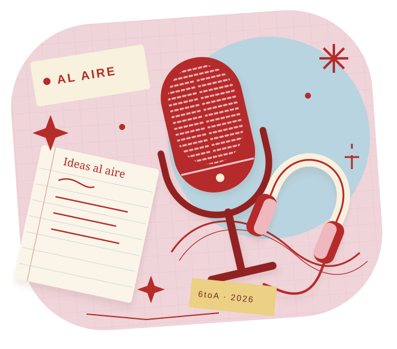

NUESTRAS VOCES, EN PRIMER PLANO
Comunicación
6toA 2026
Voces que se encuentran.
Ideas que construyen puentes.
Muestra de fin de año · Hecha por nosotros, para compartir.

IDEAS AL AIRE.UN AÑO DE PREGUNTAR, ESCUCHAR Y CREAR.DESLIZÁ Y DESCUBRÍ
01 / CONECTAR A TRAVÉS DE LA PALABRA
Proyecto Puentes
Conocé todo nuestro proyecto
02 / EXPLORAR, PRODUCIR, COMPARTIR
Taller de producción
en lenguajes
Podcast: Jóvenes y mundo laboral
03 / TU VOZ TAMBIÉN ES PARTE
Tablero de consejos
¿Qué consejo les darías a los jóvenes
sobre su futuro laboral?
Un espacio para lo que viene.
Las primeras notas están por llegar.
Tu consejo puede ser el comienzo.
Los consejos se publican al enviarlos. Cuidamos este espacio entre todos.